Arduino101 BLE Autonomous Rover
About This Project:
This project is an expansion of the Arudino101 BLE Rover, where I had provided some Seeedstudio Skeleton Bot 4WD versatile mechanical stage packs to a group directing a Maker encounter for Oakland, CA High School understudies. The purpose of this instructional exercise is to show how by including sensors you can make a stage to investigate how to program a self-ruling self driving vehicle.
Parts used in project
- Arduino 101
- SeeedStudio Skeleton Bot - 4WD Mobile Robotic Platform
- SeeedStudio Grove Starter Kit for Arduino101
- SeeedStudio Grove I2C Motor Driver Board
- SeeedStudio Grove 80cm Infrared Proximity Sensor
Section 1: Assemble the basic rover
This project depends on the Arduino 101 BLE rover, so you can audit the Assemble the Rover and Electrical Assembly Steps. I have included definite headings, as I have changed the introduction of the Arduino101 mount point, and utilize a moment engine controller to diminish likely hood of free wires after impacts.
Mount the Arduino101 and Motor Controllers – Mount the Arduino101 onto the acrylic mounting plate and secure it with the metal screws. Mount the engine controller onto the acrylic mounting plate and secure it with the little metal screws. Set the engine controller so that the one mounted in the center is 1, and the one in the front is 2 (see figure 1).
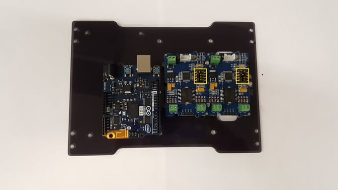figure 1
Gather the power links – The battery pack parts the yield between the engines and different gadgets. Amass the power links as appeared in the photo (see figure 2).
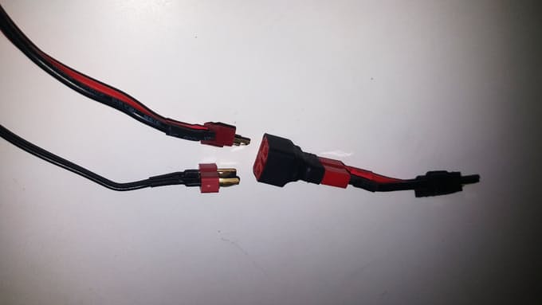figure 2
Power links and engine wires – Pass the power links and engine wires through the acrylic mounting plate. Take note of the area of the engine controller terminals; attempt to course the engine wires nearer to them (see figure 3).
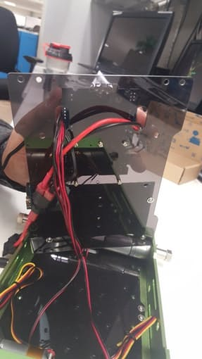figure 3
Wire motors to motor controllers – There are a sum of 8 wires (2 for each engine) shading coded in sets. Associate every engine to the engine controllers in view of the accompanying: right side engine wires go to the engine controller terminals amidst the skeleton; left side engine wires go to the engine controller terminals in the front of the suspension (see figure 4).
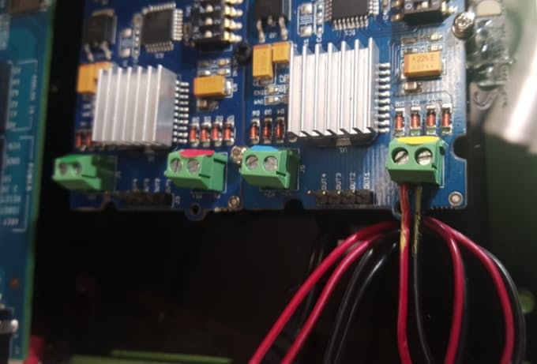figure 4
Wire power cables – Wire the power cables to the motor controllers (red is positive, black is negative). Make sure to tighten all terminals to prevent wires from disconnecting (see figure 5).
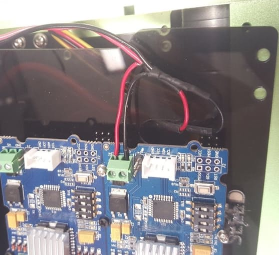figure 5
Introducing the Grove Shield – Insert the Grove shield onto the Arduino breakout board. Associate the engine controllers to the Grove Shield in any I2C named port utilizing the Grove links (see figure 6).
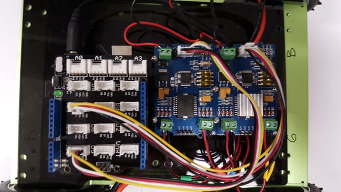figure 6
Mounting the Acrylic Plate and Add Sensors – Secure the acrylic plate to the principle case utilizing the four metal connectors. Interface the Grove LED to Grove Shield port D2 (see figure 7).
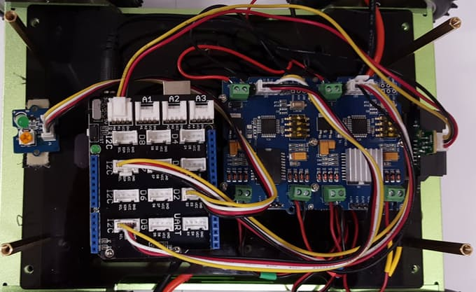figure 7
Mounting the Aluminum Plate – Secure the aluminum mounting plate on top of the acrylic mounting plate utilizing the screws (see figure 8).
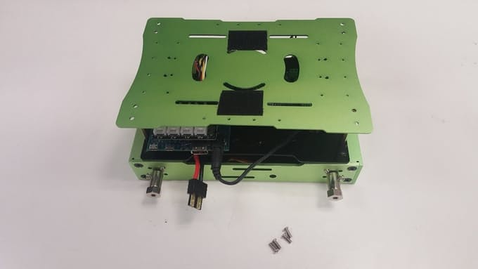figure 8
Installing the wheels – Install the 4 wheels onto the drive shafts (see figure 9).
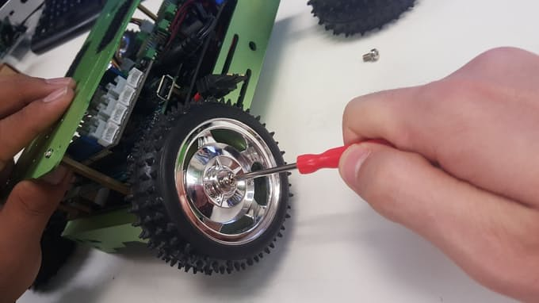figure 9
Section 2: Programming the basic rover
Interface the DC barrel jack to the Arduino 101. Associate the Li-Po battery to the Dean's male Traxxas association. Associate a USB programming link to the Arduino 101 and to your PC.
You'll require the Arduino IDE introduced on your PC, with the Intel Curie Core (see Arduino 101 beginning.) If you are new to Arduino, it's a smart thought to keep running in the Arduino IDE File - > Examples - > 01.Basics - > Blink to check that everything is working. The squinting on board LED can be seen from the side of the meanderer under the Grove Shield. Once that is checked you can stack the code, which is in the venture code area.
I utilize an indistinguishable Arduino101 and Grove Motor Controller from the Programming the Arduino101 for a fundamental wanderer so look at it for a review of how BLE is setup, and the engines are controlled utilizing the Grove Motor Controller. Since the first base model code utilized one engine controller, and two are utilized here, there are some essential changes that I needed to make
In any case, the main real augmentation that I added was to prepare the entire UART transmitted string rather simply the primary character. This permits the charges between the meanderer and the BLE cell phone to be more comprehensible. For instance, "a" go ahead got to be: "Auto:Up" and "b" turn left got to be: "Auto:Left".
This additionally implies the BLE Mobile control interface utilizing nRF tool stash UART needs to send diverse strings than that of the first venture, which utilized single characters for development. In this venture:
- “Auto:Up” Moves the rover - Forward
- “Auto:Left” Moves the rover - Left
- “Auto:Right” Moves the rover - Right
- “Auto:Back” Moves the rover - Reverse
- “Auto:Stop” Stops the rover
You can configure nRF toolbox to act as a mobile BLE interface, by following these steps:
- Install nRF Toolbox for your mobile device in either the iOS or Android app store.
- Launch the nRF Toolbox on your mobile device.
- Select the UART icon. There are nine user definable buttons in a 3x3 grid. If this is the first time, the default layout is called UART and blank.
- Press the ‘EDIT’ button in the upper right corner.
The framework shading will turn orange demonstrating it is in "Alter" show. Touching an individual catch in the network raises a setup screen where you can pick a symbol for that catch, and enter the fitting string. Do this for every one of the 5 meanderer orders. You can spare this to another name (see figures 10-12)
figure 10

figure 11

figure 12

- Select the ‘DONE’ button to run.
- Select ‘CONNECT’.
- Select the BLE name from your Arduino sketch, 4WDUART for example.
- Press the defined buttons to move the rover.
- Press ‘DISCONNECT’.
- Exit the app.
Section 3: Basic troubleshooting
If the motors do not turn at all, the I2C Grove Motor Drivers my need to be reset via a small button on the board (see figure 13).
To confirm that the wiring was done effectively, test code for the engine drivers can be utilized. If you don't mind reference the Testing Motor Control venture of Arduino101 BLE Rover extend this depends on for more subtle elements.
To verify BLE connectivity, nRF Connect for mobile can be used. Please reference the Arduino101 BLE Rover Remote Control for more details.
Section 4: Adding autonomous mode
I included a Grove 80cm Infrared Proximity Sensor to the front of the meanderer to distinguish approaching impediments. It is joined to the Grove shield at port A0 by a Grove link. By utilizing the code piece on the sensor's wiki, I found that I could distinguish obstructions with enough time to respond when the simple voltage was >1. With the second significant expansion of the base meanderer code, I included support for a self-ruling mode, where when the UART sends a string "Auto:Auto" the wanderer drives forward until a snag is recognized, and after that the meanderer will substitute turning left and appropriate for shirking.
To change the nRF Toolbox to support the autonomous mode, follow this proceedure:
- Execute the nRF Toolbox on your mobile device.
- Choose the UART icon. Choose the UART layout that you had configured for the basic rover.
- Press the "Edit" catch in the upper right corner. The framework shading will turn orange demonstrating it is in "Alter" show. Touching an individual catch in the matrix raises a setup screen where you can pick a symbol for that catch, and enter the proper string. Touch an unused catch, and set the symbol to play and set the string to "Auto:Auto".
- Chose the ‘DONE’ button to run.
- Chose ‘CONNECT.
- Chose the BLE name from your Arduino sketch, 4WDUART for example.
- Chose the defined buttons to move the rover.
- Chose ‘DISCONNECT
- Exit the app.
Section 5: Final comments and further enhancements
This venture expands on top of the first Arduino101 BLE meanderer by utilizing sensors to make a stage where designers can attempt their hands at programming an independent vehicle. Things to investigate promote on the wanderer code are: more modern deterrent shirking, numerous nearness sensors to permit the meanderer to recognize and respond to various sorts of crashes, distinctive sorts of sensors to upgrade for lighting conditions. Things to investigate promote on the BLE gadget are: interfaces past the straightforward advanced 3x3 catch framework like a simple joystick, or directing haggle quickening agent pedal, and controlling numerous meanderers from the same BLE focal gadget in the meantime. Things to investigate advance on utilize cases are: genuine execution of a run truck computer game with sensors distinguishing powers ups, apply autonomy challenges like line taking after.
 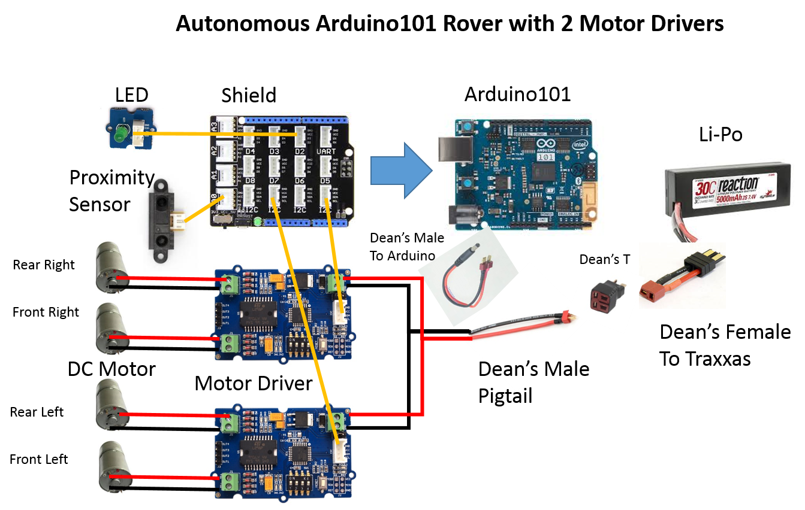
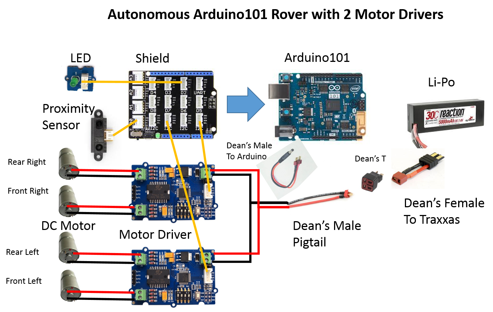
Content edited by HackerSpaceTech as granted by CC BY-SA does not carry any endorsement from original author

Oliver Chen
Published
Thu 15 December 2016
Comments
comments powered by Disqus